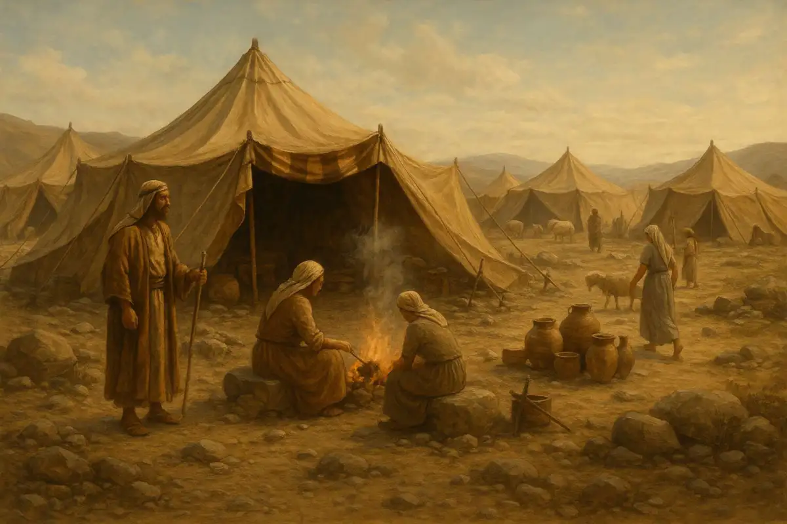

A Jornada no Deserto
O livro de Números relata a longa e difícil caminhada do povo de Israel pelo deserto rumo à Terra Prometida. É uma história marcada por contagens do povo (censos), murmurações, rebeliões, mas acima de tudo, pela fidelidade e provisão contínua de Deus, mesmo diante da incredulidade humana.
Ficha Técnica
- Autor: Tradição atribui a Moisés
- Data Aproximada: Entre 1440 e 1400 a.C.
- Tema Principal: Peregrinação, Consequências da Incredulidade e a Fidelidade de Deus
- Versículo-Chave: "O Senhor te abençoe e te guarde; o Senhor faça resplandecer o seu rosto sobre ti e te conceda graça." (Números 6:24-25)
Estrutura do Livro
- O Primeiro Censo e a organização do acampamento (Caps. 1-10)
- A Rebelião, os espiões e a condenação a vagar no deserto (Caps. 11-25)
- O Segundo Censo e a preparação da nova geração (Caps. 26-36)
Deseja ler o texto completo com todas as traduções disponíveis?
📖 Ler Livro de Números